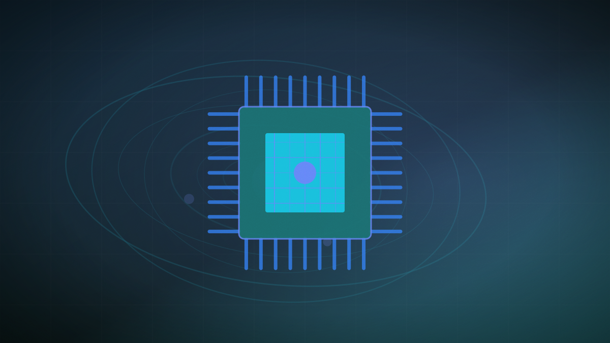

China's state carriers turn spare capacity into AI compute, with one unit up 95%
China Telecom's intelligent-computing revenue nearly doubled and China Unicom booked 41.9bn yuan from compute power, as the operators resell capacity as "token factories".

Original cover art, generated for this story. THE VISSION does not republish third-party press imagery.
- China Mobile, China Telecom and China Unicom are building out AI compute resale, billing for the tokens their infrastructure processes.
- China Telecom reported a 95% surge in intelligent computing revenue, with broader intelligent-business revenue up 7.1% to 31.1bn yuan ($4.6bn) and cloud revenue up 7.8% to 61.8bn yuan.
- China Unicom booked 41.9bn yuan in computing-power revenue across data centres, leased compute, software and cloud AI services, a 13% increase.
- China Telecom's Xirang orchestration software now supports more than 20 chip architectures, a hedge against reliance on any single supplier.
China's three state-owned carriers — China Mobile, China Telecom and China Unicom — are converting telecoms infrastructure into AI compute businesses, reselling capacity and billing for the tokens processed on it. The framing the sector uses is "token factories", and the reported numbers suggest it is becoming a material revenue line rather than a positioning exercise.
China Telecom reported a 95% surge in intelligent computing revenue. Its broader intelligent-business revenue rose 7.1% to 31.1bn yuan, about $4.6bn, and cloud revenue rose 7.8% to 61.8bn yuan. China Unicom booked 41.9bn yuan in computing-power revenue spanning data centres, leased compute, software and cloud AI services, up 13%.
The technical detail worth noting is architectural breadth rather than scale. China Telecom's Xirang orchestration software now extends support to more than 20 chip architectures, and China Unicom's UniAI platform connects over 200 large language models while managing more than 500 terabytes of curated data. Supporting that many architectures is expensive engineering that only makes sense where the supply of any particular accelerator cannot be relied on.
Twenty-plus supported chip architectures is what export-controlled compute procurement looks like in software: rather than betting on one accelerator, the carriers have paid to make their orchestration layer indifferent to which silicon it lands on. For anyone modelling the effect of chip restrictions, that is evidence the constraint is being absorbed as engineering cost and heterogeneity rather than as a hard ceiling on capacity.